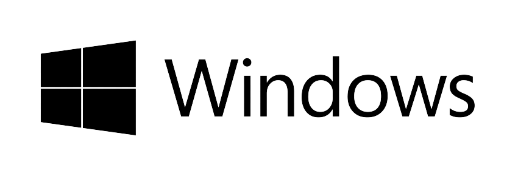
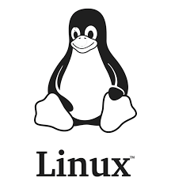
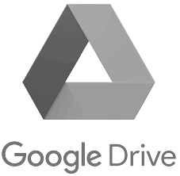
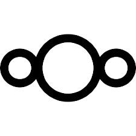
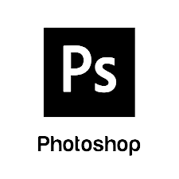

Free and open-source software (FOSS) is a term used to refer to groups of software consisting of both free software and open-source software. Where anyone is freely licensed to use, copy, study, and change the software in any way, and the source code is openly shared so that people are encouraged to voluntarily improve the design of the software. This is in contrast to proprietary software, where the software is under restrictive copyright licensing and the source code is usually hidden from the users.
FOSS maintains the software user's civil liberty rights. Other benefits of using FOSS can include decreased software costs, increased security and stability (especially in regard to malware), protecting privacy, education, and giving users more control over their own hardware. Free and open-source operating systems such as Linux and descendants of BSD are widely utilized today, powering millions of servers, desktops, smartphones (e.g., Android), and other devices. Free-software licenses and open-source licenses are used by many software packages. The free software movement and the open-source software movement are online social movements behind widespread production and adoption of FOSS, with the former preferring to use the terms FLOSS or free/libre.
From the 1950s and on through the 1980s, it was common for computer users to have the source code for all programs they used, and the permission and ability to modify it for their own use. By the late 1960s, the prevailing business model around software was changing. A growing and evolving software industry was competing with the hardware manufacturer's bundled software products; rather than funding software development from hardware revenue, these new companies were selling software directly. Leased machines required software support while providing no revenue for software, and some customers who were able to better meet their own needs did not want the costs of software bundled with hardware product costs. In United States vs. IBM, filed January 17, 1969, the government charged that bundled software was anticompetitive. While some software was still being provided without monetary cost and license restriction, there was a growing amount of software that was only at a monetary cost with restricted licensing. In the 1970s and early 1980s, some parts of the software industry began using technical measures (such as distributing only binary copies of computer programs) to prevent computer users from being able to use reverse engineering techniques to study and customize software they had paid for. In 1980, the copyright law was extended to computer programs in the United States—previously, computer programs could be considered ideas, procedures, methods, systems, and processes, which are not copyrightable.
If you want to commit to going completely open-source, then try replacing your operating system with Linux. Linux is entirely free, open-source, and has thousands of distributions to choose from, so you can find the one that fits you perfectly. Some Linux distributions are even designed for former Windows users. A good starting point with Linux is Ubuntu, as it’s widely supported and easy to use.
 Google Drive’s collaborative, easy-to-use file sharing features make it a popular choice for many people. But Google has been heavily criticized over privacy concerns and selling data. An open-source alternative such as Nextcloud might be a better solution for you. Nextcloud is a self-hosted productivity platform that allows you to sync and store files, conduct calls and meetings over the web, and manage calendars, contacts, and mail. You control where you put your data, so you can be sure it’s more secure.
 Concerning criticism over privacy concerns, Google Chrome hasn’t fared much better than Drive. The release of Chrome’s tracking algorithm FLoC (Federated Learning of Cohorts) has many users worried about their privacy while browsing with Chrome. If you want to avoid Google’s creepy trackers, try the open-source web browser Firefox. Firefox has stronger default privacy settings in place than Chrome.
Adobe Photoshop is an industry leader in graphics and photo editing software, but it can be expensive. If you want a quality photo editing software that’s free and open-source, try GIMP. It has fewer features than Photoshop, but for most users, it’s more than adequate.
Free and Open-Source Software (FOSS) is closely tied to the GNU/Linux operating system. Linux is a free and open-source operating system kernel that was first released in 1991 by Linus Torvalds. The kernel is a critical component of the operating system that provides low-level system services such as hardware device management, process management and memory management.
In the early days of Linux, the operating system lacked many of the user-level tools and applications that are necessary for a complete computing environment. This is where the GNU Project comes in. The GNU Project was founded by Richard Stallman in 1983 with the goal of creating a complete, free, and open-source Unix-like operating system.The GNU Project provided many of the tools and applications that are necessary for a complete computing environment, such as the GNU Compiler Collection (GCC) the GNU C Library (glibc), and the bash shell.
When combined with the Linux kernel, these GNU tools and applications form a complete, free, and open-source operating system that is commonly known as GNU/Linux. The combination of the Linux kernel and the GNU tools and applications is often referred to as the GNU/Linux operating system.
Today, GNU/Linux is a popular operating system that is widely used in a range of applications, including web servers, supercomputers, and embedded devices. The close tie between GNU and Linux has helped to promote the development of FOSS, and has led to the creation of a large and vibrant community of developers and users who work together to create and maintain high-quality, free, and pen-source software.